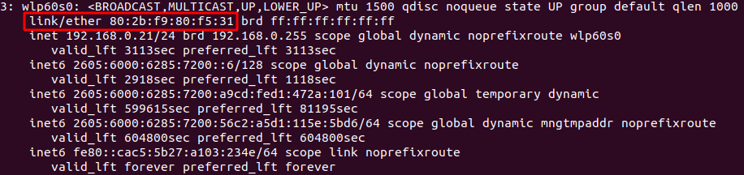

Layer 2 - Related to switching
MAC - Media Access Control (link/ether when running `ip a`)

The Network Interface Card (NIC) assigns a MAC address to the device
The first three pairs of the MAC address are associated with the vendor (Look up tools available online)